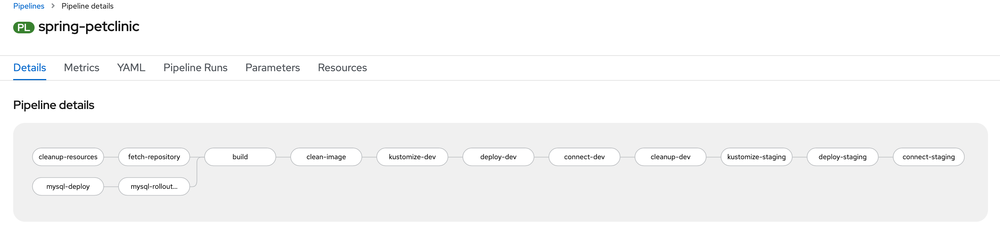
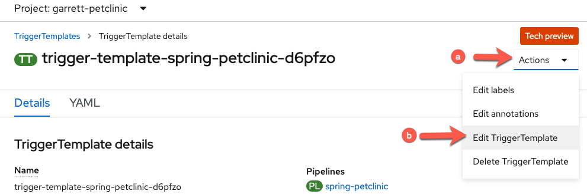
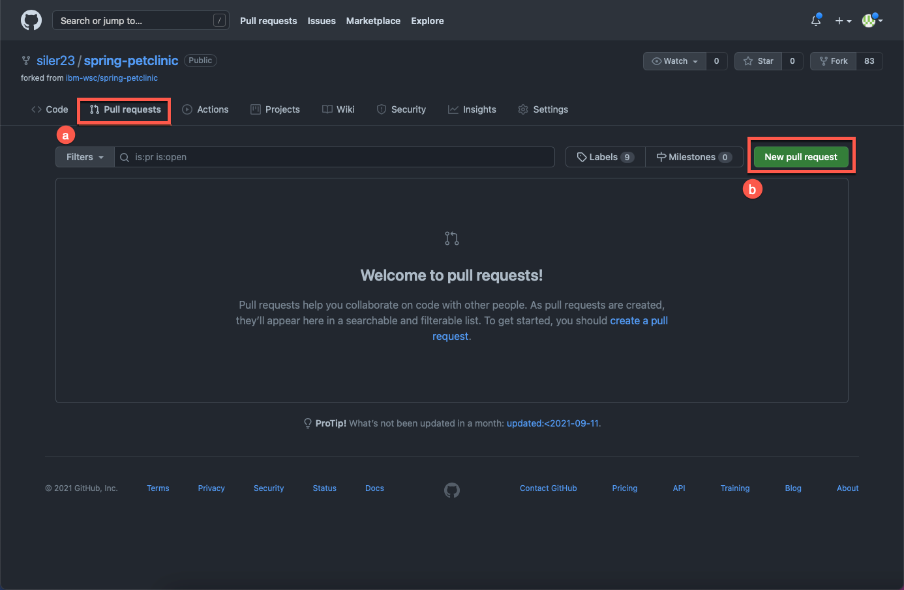
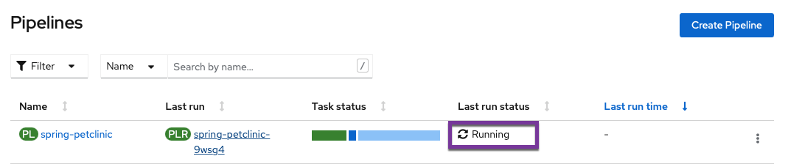
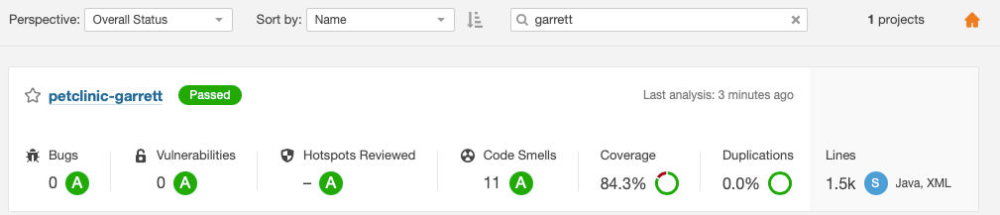

13. Configure SonarQube code analysis in your Pipeline¶
As a bonus lab, you will now configure an extra task in your existing Pipeline to conduct code scanning on your petclinic source code. This exercise is to show you one way of incorporating security code scanning as part of your automated CI/CD pipeline.
We will use the popular open source package SonarQube to do the code scanning. According to Wikipedia, "SonarQube is an open-source platform developed by SonarSource for continuous inspection of code quality to perform automatic reviews with static analysis of code to detect bugs, code smells, and security vulnerabilities on 20+ programming languages."
For Petclinic, we will be using SonarScanner for Maven. The ability to execute the SonarQube analysis via a regular Maven goal makes it available anywhere Maven is available (developer build, CI server, etc.), without the need to manually download, setup, and maintain a SonarQube Runner installation. For more information on SonarScanner for Maven, please see here.
13.1 Accessing the SonarQube server with your assigned credentials¶
The lab instructors have already setup a SonarQube server within the OpenShift cluster for you to access for code scanning. Credentials have also been setup for you. Please use your assigned credentials to test access to the SonarQube Server.
Access the SonarQube server here
Select Log in in the upper right hand corner. And log in with your assigned credentials.
If you are not successful with this step, please let the instructor know.
13.2 Generate a security token for your SonarQube account¶
You'll need either your credentials, or an access token associated with your account, in order to access the server for code scanning.
Let's use the access token method.
Now that you've logged in, select your account in the upper right hand corner of the SonarQube server page.

In the account panel, go to the security tab, and type in the name petclinic to help identify your token, and then select Generate. Now copy and save this token to be used in the next step.

13.3 Configuring maven-settings with the Sonar scanner plugin¶
We need to configure maven with the Sonar scanner plugin prefix. We will do that by including the sonar scanner plugin in the maven settings file.
We will create a Kubernetes ConfigMap for the mavens settings file.
Click on the import button at the top of the OpenShift console.
Copy and paste the entirety of the following into the editor and then hit "Save" (copy by clicking on the copy icon in the top right of the box below).
kind: ConfigMap
apiVersion: v1
metadata:
name: maven-settings
data:
settings.xml: |
<?xml version="1.0" encoding="UTF-8"?>
<settings>
<pluginGroups>
<pluginGroup>io.spring.javaformat</pluginGroup>
<pluginGroup>org.sonarsource.scanner.maven</pluginGroup>
</pluginGroups>
<profiles>
<profile>
<id>sonar</id>
<activation>
<activeByDefault>true</activeByDefault>
</activation>
<properties>
<!-- Wait until the quality check is complete in SonarQube -->
<sonar.qualitygate.wait>
true
</sonar.qualitygate.wait>
<!-- Exclude DTO Files from SonarQube duplication check as these should have duplications -->
<sonar.cpd.exclusions>
**/*DTO*
</sonar.cpd.exclusions>
</properties>
</profile>
</profiles>
</settings>
13.4 Configuring maven task into Pipeline to do code analysis¶
Go back to your OpenShift console and go to your pipeline. Your pipeline should look like the picture below, at this point of the workshop.

-
We will insert the code analysis task before the build task. The idea being we want to scan the source code for bugs and vulnerabilities, before we build a container image out of it.
a. From your pipeline screen, Go to Actions -> Edit Pipeline.
b. Select the plus sign before the build task, as in the picture below.

c. Then select the task
mavenfrom the drop down list.
Tip
Once you add a specific task (i.e.
maven), clicking on the oval of the task will enable you to edit its default values for your needs. -
Give the task the following parameters to do the code analysis with the proper maven goals set to do code scanning against our SonarQube server, be careful to substitute the
-Dsonar.logingoal with the token that you generated in the previous step. Also be mindful to put your name in the value of theDsonar.projectNameand`Dsonar.projectKeygoals.
Display Name
code-analysisMAVEN_IMAGE
maven:3.8.1-jdk-11-openj9GOALS
packagesonar:sonar-Dsonar.login=<use-your-token-from-previous-step>-Dsonar.host.url=https://sonarqube-1637004968927.apps.cloudnative.marist.edu-Dsonar.projectName=petclinic-<your-name>-Dsonar.projectKey=petclinic-<your-name>Caution
Remember to replace
<your-name>with your name such aspetclinic-garrett. -
Now you can click away to get back to the main pipeline edit panel.
-
Save the
pipeline. -
Now we will need to add our pipeline workspaces to this task.
-
Switch to
YAMLfrom pipeline menu.
Why are you editing yaml directly?
Workspacesare more versatile than traditionalPipelineResourceswhich is why you are using them. However, as the transition to workspaces continues, the OpenShift Pipeline Builder doesn't support editing theWorkspacemapping from a pipeline to a task via the Builder UI so you have to do it directly in the yaml for now. -
Find the
code-analysistask and add the following workspace definition:workspaces: - name: source workspace: workspace - name: maven-settings workspace: maven-settingsHow can you easily find the
code-analysistask and add the workspace definition?- You can click on the black yaml box and then use your find keyboard shortcut (
ctrl+ffor Windows /command+ffor mac) to bring up the find textbox (labeled 1 in the image below). Then, you can search the following term by pasting it into the find textbox:name: code-analysis - Paste the workspace definition under the highlighted line as shown in the image below.

- You can click on the black yaml box and then use your find keyboard shortcut (
-
Add
maven-settingsto the list of pipeline workspaces-
Scroll down to the very bottom of the pipeline yaml file where you can find the workspaces for the pipeline defined.
-
Add the
maven-settingsworkspace to the pipeline with the following:- name: maven-settings -
Save the pipeline

Note
After the save message appears you can then proceed to
Cancelback to the pipeline menu. -
-
13.5 Add the new maven-settings workspace to the TriggerTemplate¶
-
Go to the TriggerTemplates section of your pipeline and click the link to take you to your pipeline's
TriggerTemplate
-
Edit the
TriggerTemplate- Click Actions
- Choose
Edit TriggerTemplatefrom the dropdown menu

-
Add the workspace to the
workspacessection of the TriggerTemplate.-
Add the following code to the
workspacessection- name: maven-settings configMap: name: maven-settingsNote
Take care to match the indentation in the picture below
-
Click
Saveto apply your changes

-
13.6 Run the pipeline¶
Go to the Actions menu of your pipeline and select Start.

Hit Start after reviewing the settings panel and making sure to set the options for the maven-settings workspace (select configmap as the resource choice and maven-settings as the specific configmap to use as in the image below).

You can go to your pipeline logs and see the output for each of the tasks.
It will take 15-20 minutes for the code analysis to run completely through. This task will wait until the quality check is complete in SonarQube and if the quality gate fails, this task will fail and the pipeline will not continue to run. If the quality gate succeeds, this task will succeed and progress onto the next task in the pipeline.
Let's see if our code passes the code analysis...

It fails  . Next, we are going to see why it failed.
. Next, we are going to see why it failed.
13.7 Analyzing the Failure in SonarQube¶
13.7.1 View your project¶
At this point please return to the SonarQube server here, and view the code scan report to see what caused the quality check to fail. After logging in, please do the following:

-
Type your name in the project search bar to bring up your project
-
Click on your project (which should have a
Failedlabel)
13.7.2 Check what caused the failure¶

You can see that the overall code check failed due to a security rating worse than A. You should see 9 vulnerabilities that caused this failure. In order to check what these are, please click on the vulnerabilities link as shown in the image.

-
See individual vulnerabilities and click on
Why is this an issue? -
Read the vulnerability descriptions to see why they are a problem and get insights into fixing them in the code.
13.8 Update PetClinic to fix the issues that came up in the SonarQube scan¶
In the scan, there were various security issues related to the use of entity objects for data transfer instead of data transfer objects (DTOs) when using @RequestMapping and similar methods. In order to fix these, you will have to make changes to the java code for the application. Luckily for you, the changes have already been made on the security-fixes branch of the project. In order to bring these changes to the main branch you will need to make a pul request and merge the security-fixes branch into the main branch.
You can do this with the following actions:
-
Go to your fork of the petclinic repository in GitHub and choose to create a new pull request

-
Click on the
Pull Requeststab -
Click on
New pull request
-
-
Change your base repository from the main repository to your fork.

-
Click on base repository default of
ibm-wsc/spring-petclinic -
Change to your petclinic fork (in my case this is
siler23/petclinicbut yours will be different)
-
-
Choose the
security-fixesbranch to merge into themainbranch and create your pull request
- Choose
security-fixesbranch to compare tomain - Click
Create pull request
- Choose
-
Write a justification for your pull request and confirm again that you want to create it

-
Write a justification such as
Create fixes for all of the security vulnerabilities that showed up in the SonarQube scan. -
Click
Create pull request
-
-
Merge your pull request, merging the
security-fixesbranch with all of the security fixes into themainbranch.
-
Confirm the merge

-
Delete the
security-fixesbranch now that it's been successfully merged into themainbranch of your petclinic repository fork.
-
See that the
security-fixesbranch was successfully merged! -
Click
Delete branchto delete the now superfluoussecurity-fixesbranch.
-
13.9 Verify that vulnerabilities in petclinic have been patched¶
-
See a new pipeline triggered back in the
Pipelinesview of your OpenShift namespace.
-
View the pipeline run and watch it successfully complete the
code-analysistask.
Note
You can also wait to see the other tasks pass but since the main goal of this section was to focus on integrating security into DevOps and you have already gone through the pipeline without the
code-analysistask, there is really no need to do so. -
View the SonarQube server again to see the updated results for your project (based on the latest scan)
-
See your project passes and click on it for full results
Tip
Search for your project with your name like before.

-
View the final results of the scan.

Those pesky vulnerabilities have been squashed!

-
13.10 Summary  ¶
¶
In this section, you started on your DevSecOps journey by integrating SonarQube security scanning into your DevOps pipeline. Initially, the scan flagged several security vulnerabilities, causing the pipeline to fail before the vulnerable code could get packaged into a container. Next, you were able to dig into the vulnerabilities and figure out what needed to be changed with the SonarQube report. Then, you applied a security patch, eliminating the flagged security vulnerabilities in the PetClinic application. With these changes, your pipeline succeeded having containerized and deployed secure code. Finally, you are left with a pipeline set up to catch any new security vulnerabilities as soon as they appear. Congratulations!